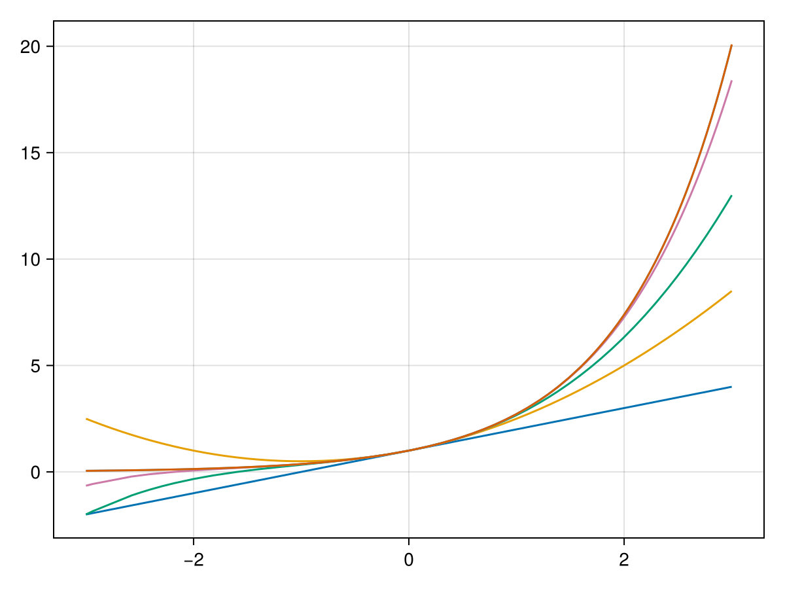

Find the Maclaurin Series of \(f(x)=e^{x}\text{.}\)
Section 1.6 Taylor Series
Subsection 1.6.1 Taylor and Maclaurin Series
We saw in the previous section that we could write power series for functions like \(\displaystyle \frac{1}{1-x}\) and related functions like \(\tan^{-1}x\) and \(\displaystyle \frac{1}{1+x^{2}}\) and others. How about other functions like \(\sin x\) or \(\sqrt{x}\) or \(e^{x}\text{?}\) More generally, if I have a function that can be written as the power series centered at \(x=a\text{,}\) that is
\begin{equation}
f(x) = \sum_{n=0}^{\infty}c_{n} (x-a)^{n}\tag{1.6.1}
\end{equation}
how do you find the coefficients \(c_{n}\text{?}\)
Answer, follow these steps. Substitute \(x=a\) into the function above:
\begin{equation*}
\begin{aligned}f(a)\amp= \sum_{n=0}^{\infty}c_{n} (a-a)^{n}\end{aligned}
\end{equation*}
and the only term of the power series that is not zero is \(c_{0}\text{,}\) so
\begin{equation*}
\begin{aligned}f(a)\amp= c_{0}\end{aligned}
\end{equation*}
Now take the derivative of (1.6.1),
\begin{equation*}
\begin{aligned}f'(x)\amp= \sum_{n=1}^{\infty}n c_{n} (x-a)^{n-1}\end{aligned}
\end{equation*}
and substitute \(x=a\text{:}\)
\begin{equation*}
\begin{aligned}f'(a)\amp= \sum_{n=1}^{\infty}n c_{n} (a-a)^{n-1}\end{aligned}
\end{equation*}
and the only non-zero term of the power series is when \(n=1\text{,}\)
\begin{equation*}
\begin{aligned}f'(a)\amp= c_{1}\end{aligned}
\end{equation*}
Now take the second derivative of (1.6.1),
\begin{equation*}
\begin{aligned}f''(x)\amp= \sum_{n=2}^{\infty}n (n-1) c_{n} (x-a)^{n-2}\end{aligned}
\end{equation*}
and substitute \(x=a\text{:}\)
\begin{equation*}
\begin{aligned}f''(a)\amp= \sum_{n=2}^{\infty}n(n-1) c_{n} (a-a)^{n-2}\end{aligned}
\end{equation*}
the only non-zero term of the power series is when \(n=2\text{:}\)
\begin{equation*}
\begin{aligned}f''(a)\amp= 1 \cdot 2 c_{2}\end{aligned}
\end{equation*}
so
\begin{equation*}
\begin{aligned}c_{2}\amp= \frac{1}{2}f''(a)\end{aligned}
\end{equation*}
Continue one more time. Thrice differentiate (1.6.1),
\begin{equation*}
\begin{aligned}f'''(x)\amp= \sum_{n=3}^{\infty}n (n-1)(n-2) c_{n} (x-a)^{n-3}\end{aligned}
\end{equation*}
plug in \(x=a\) and the only non-zero term in the power series is
\begin{equation*}
\begin{aligned}f'''(a)\amp= 1 \cdot 2 \cdot 3 c_{3}\end{aligned}
\end{equation*}
so
\begin{equation*}
\begin{aligned}c_{3}\amp= \frac{1}{3!}f'''(a)\end{aligned}
\end{equation*}
In a similar manner, it can be shown that
\begin{equation*}
\begin{aligned}c_{n}\amp= \frac{1}{n!}f^{(n)}(a)\end{aligned}
\end{equation*}
Subsubsection 1.6.1.1 Taylor Series
The Taylor Series of a function \(f(x)\) centered at \(x=a\) is
\begin{equation*}
\begin{aligned}f(x)\amp= \sum_{n=0}^{\infty}\frac{f^{(n)}(a)}{n!}(x-a)^{n} \\\amp= f(a) + f'(a)(x-a) + \frac{f''(a)}{2}(x-a)^{2} + \frac{f'''(a)}{3!}(x-a)^{3} + \cdots\end{aligned}
\end{equation*}
The Maclaurin Series of a function \(f(x)\) is the Taylor Series centered at \(x=0\) or
\begin{equation*}
\begin{aligned}f(x)\amp= \sum_{n=0}^{\infty}\frac{f^{(n)}(0)}{n!}x^{n} \\\amp= f(0) + f'(0)x + \frac{f''(0)}{2}x^{2} + \frac{f'''(0)}{3!}x^{3} + \cdots\end{aligned}
\end{equation*}
Example 1.6.1.
Subsubsection 1.6.1.2 The \(n\)th degree Taylor Polynomial
Let
\begin{equation*}
\begin{aligned}T_{n}(x)\amp= \sum_{k=1}^{n}\frac{f^{(k)}(a)}{n!}(x-a)^{k}\end{aligned}
\end{equation*}
be the \(n\)th partial sum. This is called the \(n\)th degree Taylor Polynomial.
Example 1.6.2.
Find and plot \(T_{1}, T_{2}, T_{3}, T_{5}\) and \(T_{10}\) of the Maclaurin Series for \(e^{x}\text{.}\)
Solution.
The partial sums are just the first terms of the full series in Example ex:maclaurin:series:ex.
\begin{equation*}
\begin{aligned}T_{1}(x)\amp= 1+x \\ T_{2}(x)\amp= 1 + x + \frac{x^{2}}{2}\\ T_{3}(x)\amp= 1+x+\frac{x^{2}}{2}+ \frac{x^{3}}{6} \\ T_{5}(x)\amp= 1+x+\frac{x^{2}}{2}+ \frac{x^{3}}{6}+ \frac{x^{4}}{24}+ \frac{x^{5}}{120}\\ T_{10}(x)\amp= T_{5}(x) + \frac{x^{6}}{6!}+ \cdots + \frac{x^{10}}{10!}\end{aligned}
\end{equation*}

Subsection 1.6.2 Taylor’s Theorem
Nearly all of the theorems in this course will depend on the basic theorems seen in Calculus. Probably the most important theorem from that class is Taylor’s theorem, which says that given a function \(f\) there is a polynomial of a desired degree that is “close” to the function \(f\text{.}\)
This is very important because most of numerical analysis consists of using approximations. If the approximation that we use is a polynomial (and often it is), then Taylor’s theorem often helps us with knowing the error in our approximation.
Theorem 1.6.4. Taylor’s Theorem.
Suppose \(f\) is continuous on \([a,b]\) and that \(f^{(i)}(x)\) is continuous on \([a,b]\) for \(k=1,2, \ldots n+1\text{.}\) (The set of functions with this property is called \(C^{(n+1)}[a,b]\text{.}\)) Let \(x_{0} \in [a,b]\text{.}\) For every \(x \in [a,b]\) there exists a number \(\xi(x)\) between \(x\) and \(x_{0}\) such that
\begin{equation*}
\begin{aligned}f(x)\amp = P_{n}(x) + R_{n}(x)\end{aligned}
\end{equation*}
where
\begin{equation*}
\begin{aligned}P_{n} (x)\amp = \sum_{k=0}^{n}\frac{f^{(k)}(x_{0})}{k!}(x-x_{0})^{k}\amp R_{n} (x)\amp = \frac{f^{(n+1)}(\xi(x))}{(n+1)!}(x-x_{0})^{k+1}\end{aligned}
\end{equation*}
The function \(P_{n}(x)\) is called the Taylor Polynomial of degree \(n\) and \(R_{n}(x)\) is called the remainder term. The Taylor Polynomial approximates the function \(f\) on the interval \([a,b]\) and the remainder term is often used to determine the error bound. Often the form used is:
\begin{equation*}
\begin{aligned}|f(x) - P_{n}(x)|\amp = |R_{n}(x)| \leq \max_{x \in [a,b]}|f^{(n+1)}(x)| \frac{{|b-a|}^{n+1}}{(n+1)!}\label{eq:taylors:thm}\end{aligned}
\end{equation*}
Theorem 1.6.5.
\begin{equation*}
\begin{aligned}\lim_{n \rightarrow \infty}\frac{x^{n}}{n!}= 0 \qquad \qquad \text{for every real number $x$.}\end{aligned}
\end{equation*}
Proof.
Earlier, we showed that
\begin{equation*}
\begin{aligned}\sum_{n=0}^{\infty}\frac{x^{n}}{n!}\end{aligned}
\end{equation*}
converges for every real number \(x\text{.}\) By the convergence theorem, the statement above is true.
Example 1.6.6.
Prove that \(e^{x}\) converges to its Maclaurin Series.
Solution.
Since \(f(x)=e^{x}\text{,}\) recall that \(f^{(n)}(x) = e^{x}\) for all \(n\text{.}\) Let \(d\) be any positive number and for \(|x|\leq d\text{,}\) \(e^{x} \leq e^{d}\text{,}\) so \(M=e^{d}\text{.}\) Using Taylor’s Inequality,
\begin{equation*}
\begin{aligned}R_{n}(x)\amp \leq \frac{M}{(n+1)!}|x-a|^{n+1}= \frac{e^{d}}{(n+1)!}|x|^{n+1}\end{aligned}
\end{equation*}
Taking the limit as \(n \rightarrow \infty\)
\begin{equation*}
\begin{aligned}\lim_{n \rightarrow \infty}R_{n}(x) \leq \lim_{n \rightarrow \infty}\frac{e^{d}}{(n+1)!}|x|^{n+1}= 0\end{aligned}
\end{equation*}
by the theorem above, so since \(R_{n}(x) \rightarrow 0\) for all \(|x|\leq d\text{,}\) this proves that the Maclaurin series converges to \(e^{x}\) for all \(|x|\lt d\text{.}\) Since this is true for any number \(d\text{,}\) then this is true for any number \(x\text{.}\) \(\boxed{\phantom{x}}\)
Subsection 1.6.3 Taylor Series of \(\sin x\) and \(\cos x\)
Example 1.6.7.
Find the Maclaurin Series for \(\sin x\text{.}\)
Solution.
\begin{equation*}
\begin{aligned}f(0)\amp = 0\amp f'(0)\amp = 1\amp f''(0)\amp = 0\amp f'''(0)\amp = -1 \\ f^{(4)}(0)\amp = f(0) = 0\end{aligned}
\end{equation*}
So the coefficients are \(0,1,0,-1,0,1,0,-1,\ldots\text{.}\)
\begin{equation*}
\begin{aligned}\sin x\amp = 0 + \frac{1}{1!}x + 0 + \frac{-1}{3!}x^{3} + 0 + \frac{1}{5!}x^{5} + \cdots\\
\amp \text{and this can be written in the form} \\
\sin x\amp = \sum_{n=0}^{\infty}\frac{(-1)^{n}}{(2n+1)!}x^{2n+1}\end{aligned}
\end{equation*}
Example 1.6.8.
Find the Maclaurin series for \(\cos x\text{.}\)
Subsection 1.6.4 The Binomial Series
The binomial series is simply the Maclaurin Series for the function \(f(x) = (1+x)^{k}\text{.}\) It is extremely useful in that many functions can be written in this form or adapted from this function as we will see.
\begin{equation*}
\begin{aligned}f(x)\amp = (1+x)^{k}\amp f(0)\amp = 1 \\ f'(x)\amp = k (1+x)^{k-1}\amp f'(0)\amp = k \\ f''(x)\amp = k(k-1) (1+x)^{k-2}\amp f''(0)\amp = k (k-1) \\ f'''(x)\amp = k(k-1)(k-2) (1+x)^{k-3}\amp f'''(0)\amp = k (k-1)(k-2) \\ \vdots \\ f^{(n)}(x)\amp = (1+x)^{k-n}\prod_{j=0}^{n-1}(k-j)\amp f^{(n)}(0)\amp = \prod_{j=0}^{n-1}(k-j)\end{aligned}
\end{equation*}
so substituting this into the formula for Taylor Series, we get:
\begin{equation*}
\begin{aligned}f(x)\amp = 1 + \frac{k}{1!}x + \frac{k(k-1)}{2!}x^{2} + \frac{k(k-1)(k-2)}{3!}x^{3} + \cdots\end{aligned}
\end{equation*}
so
\begin{equation*}
\begin{aligned}a_{0}\amp = 1\amp a_{n}\amp = \frac{k(k-1)(k-2) \cdots (k-n+1)}{n!}= \frac{1}{n!}\prod_{j=0}^{n-1}(k-j), \quad \text{ for $n \geq 1$}\label{eq:binom:coeffs}\end{aligned}
\end{equation*}
Convergence of the Binomial Series. If we apply RATFACE
\begin{equation*}
\begin{aligned}\lim_{n \rightarrow \infty}\biggl\vert \frac{\frac{k(k-1)(k-2) \cdots (k-n)x^{n+1}}{(n+1)!}}{\frac{k(k-1)(k-2) \cdots (k-n+1)x^{n}}{n!}}\biggr\vert\amp = \lim_{n \rightarrow \infty}|x| \frac{|k-n-1|}{(n+1)}= |x|\end{aligned}
\end{equation*}
so this converges when \(|x|\lt 1\) so the radius of convergence is \(R=1\text{.}\)
There are a number of cases for the binomial series.
- \(k \in \mathbb{Z}^{+}\)
- In this case\(a_{n}=0\) for \(n=k+1,k+2,\ldots\) and the power series reduces to
1
Recall that $\mathbb{Z}^{+}$ is a notation that means the positive integers. Also $\mathbb{Z}^{-}$ is the set of all negative integers.\begin{equation*} \begin{aligned}(1+x)^{k}\amp = \sum_{n=0}^{k}\binom{k}{n}x^{n}\end{aligned} \end{equation*}where\begin{equation*} \begin{aligned}\binom{k}{n}\amp = \frac{k(k-1)(k-2) \cdots (k-n+1)}{n!}= \frac{k!}{n!(k-n)!}\quad \text{when $k \geq 0$}\end{aligned} \end{equation*} - \(k \in \mathbb{Z}^-\)
- In this case all of the coefficients are integers however it is an infinite series.
- \(k \in \mathbb{Q}\)
We show example of the binomial theorem for different values of \(k\text{.}\)
Example 1.6.9.
Solution.
\begin{equation*}
\begin{aligned}(1+x)^{5}\amp = \binom{5}{0}x^{0} + \binom{5}{1}x^{1} + \binom{5}{2}x^{2} + \binom{5}{3}x^{3} + \binom{5}{4}x^{4} + \binom{5}{5}x^{5} \\\amp = 1 + 5 x + 10 x^{2} + 10x^{3} + 5 x^{4} + x^{5}\end{aligned}
\end{equation*}
which is identical to expansion of the term \((1+x)^{5}\) using techniques learned before.
Example 1.6.10.
Solution.
In this case \(k=-1\text{,}\) and we directly use (eq:binom:coeffs),
\begin{equation*}
\begin{aligned}a_{0}\amp = 1\amp a_{1}\amp = \frac{-1}{1!}= -1 \\ a_{2}\amp = \frac{(-1)(-2)}{2!}= 1\amp a_{3}\amp = \frac{(-1)(-2)(-3)}{3!}= -1 \\ \vdots\amp \\ a_{n}\amp = (-1)^{n}\end{aligned}
\end{equation*}
so now we can write the power series as
\begin{equation*}
\begin{aligned}(1+x)^{-1}\amp = \sum_{n=0}^{\infty}(-1)^{n} x^{n}\end{aligned}
\end{equation*}
which we also saw using the geometric series.
Example 1.6.11.
Use the binomial theorem to find the power series expansion of \(\sqrt{1+x}\text{.}\)
Solution.
In this case \(k=1/2\text{:}\)
\begin{equation*}
\begin{aligned}a_{0}\amp = 1 \\ a_{1}\amp = \frac{1/2}{1!}= \frac{1}{2}\\ a_{2}\amp = \frac{(1/2)(-1/2)}{2}= \frac{(-1)}{2^{n} \cdot 2!}\\ a_{3}\amp = \frac{(1/2)(-1/2)(-3/2)}{3!}= \frac{1\cdot 3}{2^{3} \cdot 3!}\\ a_{4}\amp = \frac{(1/2)(-1/2)(-3/2)(-5/2)}{4!}= \frac{-1\cdot 3\cdot 5}{2^{4} \cdot 4!}\\ a_{5}\amp = \frac{(1/2)(-1/2)(-3/2)(-5/2)(-7/2)}{5!}= \frac{1 \cdot 3 \cdot 5 \cdot 7}{2^{5} \cdot 5!}\\ \vdots \\ a_{n}\amp = (-1)^{n+1}\frac{(2n-3)!!}{2^{n} \cdot n!}\end{aligned}
\end{equation*}
where \(n!! = (n)(n-2)(n-4) \cdots 1\text{.}\)
The power series representation of \(\sqrt{1+x}\) is
\begin{equation*}
\begin{aligned}1+ \frac{x}{2}+ \sum_{n=2}^{\infty}(-1)^{n+1}\frac{(2n-3)!!}{2^{n} \cdot n!}x^{n}\end{aligned}
\end{equation*}
Subsection 1.6.5 Summary of Important Maclaurin Series
Using the formula for Taylor’s Series similar to examples shown above, the following series are found.
Important Maclaurin SeriesThe following are Maclaurin series for the given function as well as \(R\text{,}\) the radius of convergence:
\begin{equation*}
\begin{aligned}e^{x}\amp = \sum_{n=0}^{\infty}\frac{x^{n}}{n!},\amp R\amp =\infty \\ \sin x\amp = \sum_{n=0}^{\infty}(-1)^{n} \frac{x^{2n+1}}{(2n+1)!},\amp R\amp =\infty \\ \cos x\amp = \sum_{n=0}^{\infty}(-1)^{n} \frac{x^{2n+1}}{(2n+1)!},\amp R\amp =\infty \\ \frac{1}{1-x}\amp = \sum_{n=0}^{\infty}x^{n},\amp R\amp =1 \\ \tan^{-1}x\amp = \sum_{n=0}^{\infty}(-1)^{n} \frac{x^{2n+1}}{2n+1},\amp R\amp =1 \\ (1+x)^{k}\amp = \sum_{n=0}^{\infty}\frac{k(k-1)(k-2)\cdots(k-n+1)}{n!}x^{n},\amp R\amp =1\end{aligned}
\end{equation*}
We can also find more complicated series based on previous series. Common function include composite functions as well as the sum, difference product and quotient of known series with powers of \(x\) as well as the integration or differentiation. The next two examples show how to do this.
Example 1.6.12.
Find the Maclaurin series of \(\cos (x^{2})\)
Example 1.6.13.
Use a given series, differentiation and/or integration to find the Maclaurin series of \(\sin^{-1}x\text{.}\)
Recall that
\begin{equation*}
\begin{aligned}\frac{d}{dx}\sin^{-1}x\amp = \frac{1}{\sqrt{1-x^{2}}}\end{aligned}
\end{equation*}
and
\begin{equation*}
\begin{aligned}\frac{d}{dx}\sqrt{1+x}= \frac{1}{2 \sqrt{1+x}}\end{aligned}
\end{equation*}
so the Maclaurin Series of
\begin{equation*}
\begin{aligned}\frac{1}{\sqrt{1+x}}\amp = 2 \frac{d}{dx}\sqrt{1+x}\\\amp = 2 \frac{d}{dx}\biggl(1+ \frac{x}{2}+ \sum_{n=2}^{\infty}(-1)^{n+1}\frac{(2n-3)!!}{2^{n} \cdot n!}x^{n} \biggr) \\\amp = 1 + \sum_{n=2}^{\infty}(-1)^{n+1}\frac{n(2n-3)!!}{2^{n-1}n!}x^{n-1}\\\amp = 1+ \sum_{n=1}^{\infty}(-1)^{n} \frac{(n+1)(2n-1)!!}{2^{n} (n+1)!}x^{n}\end{aligned}
\end{equation*}
Next, we find the Maclaurin Series for \((1-x^{2})^{-1/2}\) by replacing \(x\) above with \(-x^{2}\text{.}\)
\begin{equation*}
\begin{aligned}\frac{1}{\sqrt{1-x^{2}}}\amp = 1+ \sum_{n=1}^{\infty}(-1)^{n} \frac{(n+1)(2n-1)!!}{2^{n} (n+1)!}(-x^{2})^{n} \\\amp = 1+\sum_{n=1}^{\infty}\frac{(n+1)(2n-1)!!}{2^{n} (n+1)!}x^{2n}\\\end{aligned}
\end{equation*}
Lastly, we integrate this to get the Maclaurin series for \(\sin^{-1}x\text{:}\)
\begin{equation*}
\begin{aligned}\sin^{-1}x\amp = \int \frac{1}{\sqrt{1-x^{2}}}\, dx \\\amp = \int 1+\sum_{n=1}^{\infty}\frac{(n+1)(2n-1)!!}{2^{n} (n+1)!}x^{2n}\, dx \\\amp =C+ x+ \sum_{n=1}^{\infty}\frac{(n+1)(2n-1)!!}{2^{n}(2n+1) (n+1)!}x^{2n+1}\\\end{aligned}
\end{equation*}
And find \(C\) by plugging in \(x=0\text{.}\) Since \(\sin^{-1}(0) = C\text{,}\) then \(C=0\) and thus
\begin{equation*}
\begin{aligned}\sin^{-1}x\amp = x+ \sum_{n=1}^{\infty}\frac{(n+1)(2n-1)!!}{2^{n}(2n+1) (n+1)!}x^{2n+1}\\\end{aligned}
\end{equation*}
An alternative to doing this is to use Taylor’s Formula, however, if we start differentiating:
\begin{equation*}
\begin{aligned}f(x)\amp = \sin^{-1}x\amp f(0)\amp = 0 \\ f'(x)\amp = \frac{1}{\sqrt{1-x^{2}}}\amp f'(0)\amp = 1 \\ f''(x)\amp = x (1-x^{2})^{-3/2}\amp f''(0)\amp = 0 \\ f'''(x)\amp = (1-x^{2})^{-3/2}+ 3x^{2} (1-x^{2})^{-5/2}\amp f'''(0)\amp = 1\end{aligned}
\end{equation*}
and the derivatives get harder each derivative, so the other is easier to do.